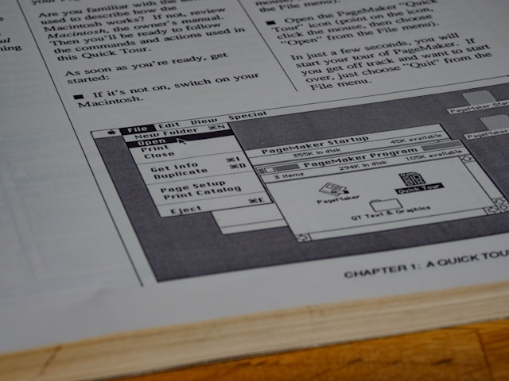

Impression & Solutions Documentaires
Impression professionnelle pour tous vos besoins
Nous proposons des services d’impression de haute qualité pour entreprises, écoles, ONG et administrations. De la production à la finition, notre objectif est la clarté, la rapidité et la durabilité.
- Impression couleur et noir/blanc (documents, flyers, affiches)
- Photocopies et duplications en masse
- Reliure, plastification, découpe professionnelle
- Gestion de dossiers et impressions à la demande
- Livraison de documents à domicile ou en entreprise


Gestion documentaire moderne & numérique
IT STRATEGIX vous accompagne dans la mise en place de solutions digitales de gestion documentaire : archivage, numérisation, classement, partage sécurisé.
- Numérisation de documents physiques
- Organisation et indexation de vos archives
- Solutions cloud pour le stockage et l’accès distant
- Sécurité et traçabilité des accès
- Formation à la gestion documentaire
Pourquoi nous choisir ?
Avec IT STRATEGIX, vous bénéficiez d’un service rapide, de qualité et adapté à vos contraintes techniques ou budgétaires au Burkina Faso.
Qualité & réactivité
Matériel performant, impression rapide et finitions soignées.
Solutions sur-mesure
Pour vos événements, rapports, documents internes ou clients.
Accompagnement complet
Du support technique à la livraison, nous sommes à vos côtés.